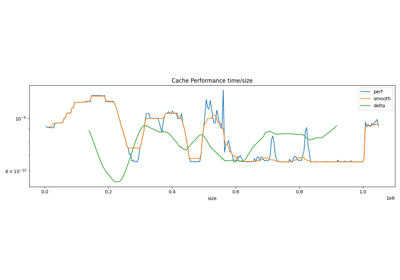
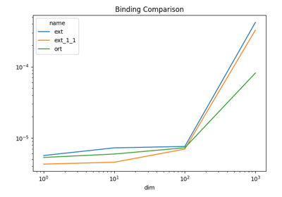
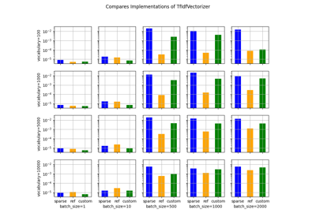
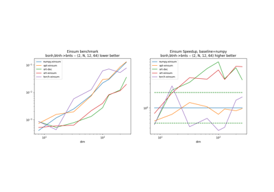
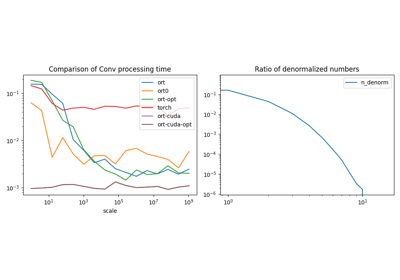
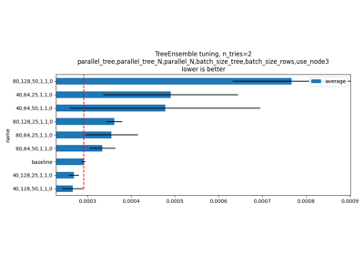
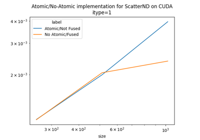
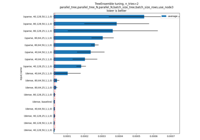
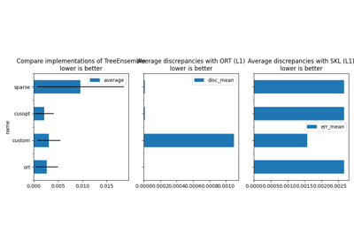

Examples Gallery¶

Measuring CPU performance
Using C implementation of operator Conv
Using C implementation of operator Conv

Measuring onnxruntime performance against a cython binding
Measuring onnxruntime performance against a cython binding
Evaluating random access for sparse
Evaluating random access for sparse

Measures loading, saving time for an onnx model in python
Measures loading, saving time for an onnx model in python

Measuring performance of TfIdfVectorizer
Measuring performance of TfIdfVectorizer
Measuring Gemm performance with different input and output tests
Measuring Gemm performance with different input and output tests
Gemm Exploration with CUDA

Compares implementations of Einsum
Compares implementations of Einsum
Fusing multiplication operators on CUDA
Fusing multiplication operators on CUDA

How float format has an impact on speed computation
How float format has an impact on speed computation

TreeEnsemble optimization

Optimizing ScatterND operator on CUDA
Optimizing ScatterND operator on CUDA
Optimizing Masked ScatterND operator on CUDA
Optimizing Masked ScatterND operator on CUDA

TreeEnsemble, dense, and sparse
TreeEnsemble, dense, and sparse
Profiles a simple onnx graph including a singleGemm
Profiles a simple onnx graph including a singleGemm
Measuring performance about Gemm with onnxruntime
Measuring performance about Gemm with onnxruntime

Evaluate different implementation of TreeEnsemble
Evaluate different implementation of TreeEnsemble